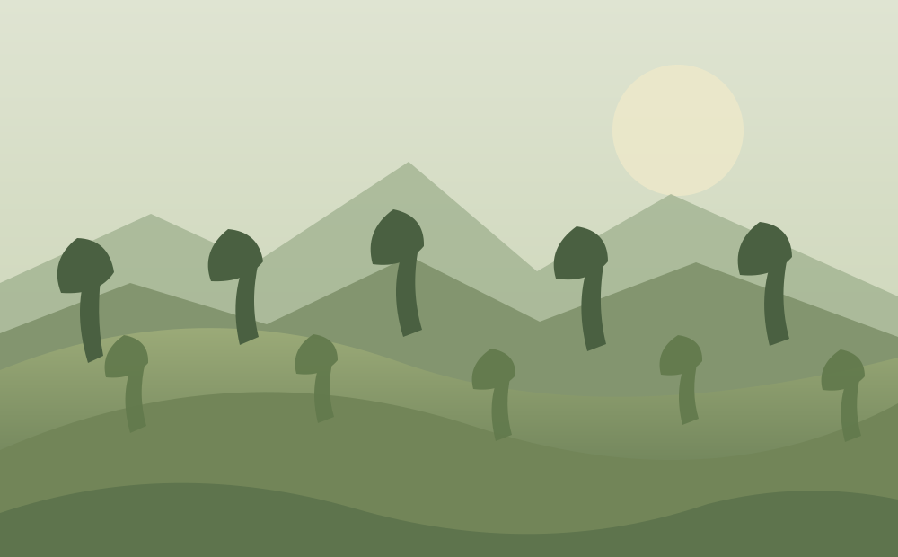

Redonda
y carnosa
Su forma recuerda a una manzana pequeña. Una pulpa generosa que invita a disfrutarla entera.
NORTE DE EXTREMADURA · DESDE SIEMPRE
Hay lugares que caben en un bocado. La Manzanilla Cacereña sabe a olivar, a tierra y a todo lo que merece la pena conservar.
Conoce su historiaEn las comarcas del norte de Cáceres, el olivo forma parte del paisaje y de la vida.
Entre sierras y pueblos, la Manzanilla Cacereña encuentra su lugar. Una variedad local, cuidada generación tras generación, que hoy se disfruta mucho más allá de su tierra.
Lo que la hace especialExtremadura, España
Un fruto versátil, con identidad propia. Tan especial en la mesa como en el aceite.
Su forma recuerda a una manzana pequeña. Una pulpa generosa que invita a disfrutarla entera.
Equilibrada y agradable, deja que el sabor del fruto sea el protagonista.
Se aprecia como aceituna de mesa y también se transforma en un aceite de personalidad propia.
EL TIEMPO TAMBIÉN ES UN INGREDIENTE
Cada cosecha sigue el ritmo del campo. Se recoge el fruto y se prepara con cuidado para conservar lo mejor de su textura y sabor.
Una tradición vivaÁrboles adaptados a la tierra y al clima de la zona.
El fruto se recoge en el momento adecuado para cada destino.
Manos expertas acompañan cada etapa de su preparación.
Una tradición de aquí que encuentra su sitio en tu mesa.
En el norte de Cáceres, los olivares forman parte de la vida de cada pueblo. Cuidarlos es mantener vivo un paisaje y una tradición que pasan de generación en generación.

UNA VARIEDAD · MUCHAS HISTORIAS
“Hay sabores que
te hacen volver.”
MANZANILLA CACEREÑA · SABOR DE ORIGEN
↑ESTAMOS AL OTRO LADO
¿Quieres saber más sobre la Manzanilla Cacereña? Déjanos un mensaje y estaremos encantados de escucharte.
Un espacio para compartir